🫁 Respiratory · NUR 235 course collection
Respiratory NCLEX questions
Every original slide/page, with readable answers and worked explanations alongside the questions.
Downloads · original files preserved
1 / 13 Respiratory
Original selectable text
Exact extraction; text embedded inside pictures remains in the full-size original visual.
Respiratory
Original case information, visual, title or supplied rationale. No additional answer blank is identified on this page.
2 / 13 Answer: bNasopharyngitis, commonly known as the common cold, is typically viral and self-limiting, meanin
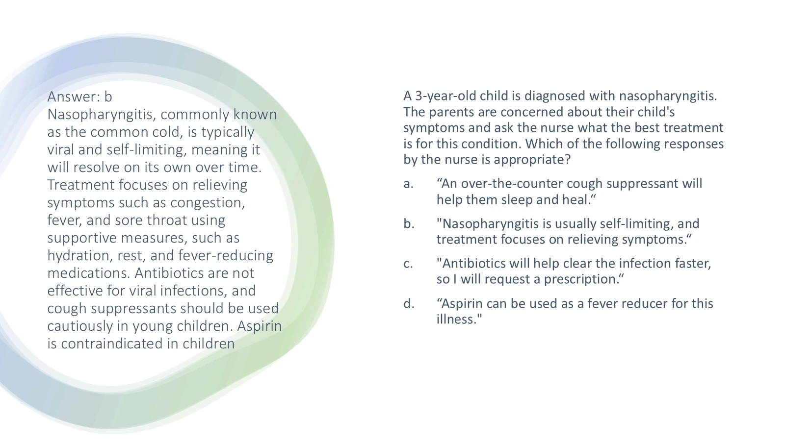
✓ Reveal answer & explanation
Course answer / worked explanation
B — Supportive care for a common cold
- A cold is usually viral and self-limited. Support hydration and comfort; antibiotics do not treat the virus.
Original selectable text
Exact extraction; text embedded inside pictures remains in the full-size original visual.
Answer: bNasopharyngitis, commonly known as the common cold, is typically viral and self-limiting, meaning it will resolve on its own over time. Treatment focuses on relieving symptoms such as congestion, fever, and sore throat using supportive measures, such as hydration, rest, and fever-reducing medications. Antibiotics are not effective for viral infections, and cough suppressants should be used cautiously in young children. Aspirin is contraindicated in children A 3-year-old child is diagnosed with nasopharyngitis. The parents are concerned about their child's symptoms and ask the nurse what the best treatment is for this condition. Which of the following responses by the nurse is appropriate? “An over-the-counter cough suppressant will help them sleep and heal.“ "Nasopharyngitis is usually self-limiting, and treatment focuses on relieving symptoms.“ "Antibiotics will help clear the infection faster, so I will request a prescription.“ “Aspirin can be used as a fever reducer for this illness."
3 / 13 A nurse is caring for a child on a clear liquid diet following a tonsillectomy. The child consumed ½ cup
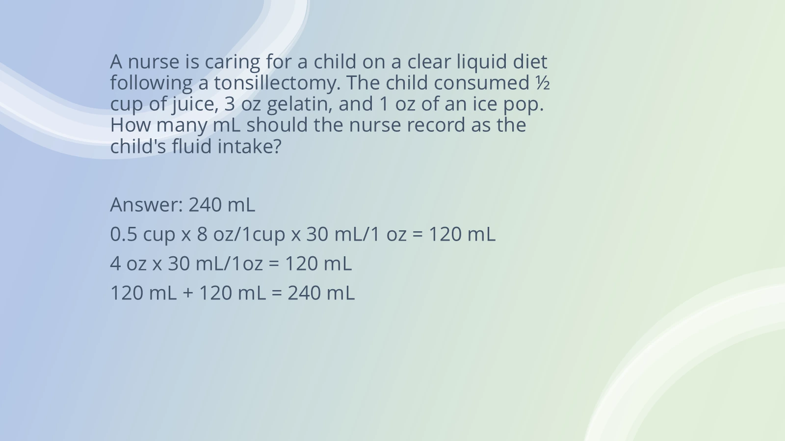
✓ Reveal answer & explanation
Course answer / worked explanation
240 mL total oral intake
- ½ cup = 4 oz = 120 mL. Gelatin: 3 oz = 90 mL. Ice pop: 1 oz = 30 mL.
- 120 + 90 + 30 = 240 mL using the course conversion of 30 mL/oz.
Original selectable text
Exact extraction; text embedded inside pictures remains in the full-size original visual.
A nurse is caring for a child on a clear liquid diet following a tonsillectomy. The child consumed ½ cup of juice, 3 oz gelatin, and 1 oz of an ice pop. How many mL should the nurse record as the child's fluid intake? Answer: 240 mL 0.5 cup x 8 oz/1cup x 30 mL/1 oz = 120 mL 4 oz x 30 mL/1oz = 120 mL 120 mL + 120 mL = 240 mL
4 / 13 Answer: bUsing a bulb syringe to clear the infant’s nasal passages before feeding can help relieve nasal
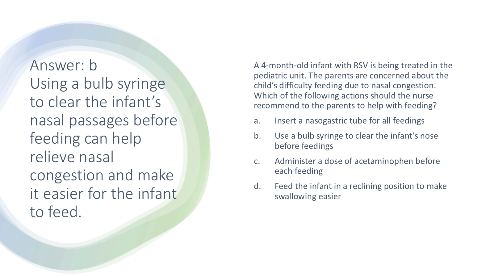
✓ Reveal answer & explanation
Course answer / worked explanation
B — Suction before feeding
- Gentle nasal suction helps an infant breathe while feeding.
Original selectable text
Exact extraction; text embedded inside pictures remains in the full-size original visual.
Answer: bUsing a bulb syringe to clear the infant’s nasal passages before feeding can help relieve nasal congestion and make it easier for the infant to feed. A 4-month-old infant with RSV is being treated in the pediatric unit. The parents are concerned about the child’s difficulty feeding due to nasal congestion. Which of the following actions should the nurse recommend to the parents to help with feeding? Insert a nasogastric tube for all feedings Use a bulb syringe to clear the infant’s nose before feedings Administer a dose of acetaminophen before each feeding Feed the infant in a reclining position to make swallowing easier
5 / 13 Answer: bCool mist can help moisten the airway and ease of breathing. OTC cough suppressants are not indi
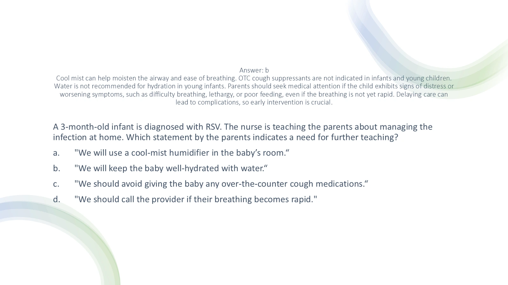
✓ Reveal answer & explanation
Course answer / worked explanation
B — Water for the infant needs further teaching
- Use age-appropriate breast milk/formula and the prescribed hydration plan; do not substitute plain water for infant feeds.
Original selectable text
Exact extraction; text embedded inside pictures remains in the full-size original visual.
Answer: bCool mist can help moisten the airway and ease of breathing. OTC cough suppressants are not indicated in infants and young children. Water is not recommended for hydration in young infants. Parents should seek medical attention if the child exhibits signs of distress or worsening symptoms, such as difficulty breathing, lethargy, or poor feeding, even if the breathing is not yet rapid. Delaying care can lead to complications, so early intervention is crucial. A 3-month-old infant is diagnosed with RSV. The nurse is teaching the parents about managing the infection at home. Which statement by the parents indicates a need for further teaching? "We will use a cool-mist humidifier in the baby’s room.“ "We will keep the baby well-hydrated with water.“ "We should avoid giving the baby any over-the-counter cough medications.“ "We should call the provider if their breathing becomes rapid."
6 / 13 Answer: aStridor at rest and increasing agitation indicate worsening respiratory distress in a child with
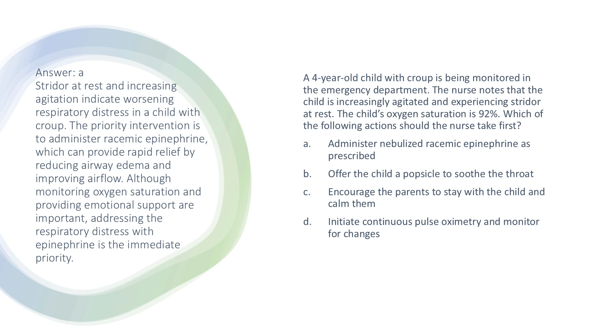
✓ Reveal answer & explanation
Course answer / worked explanation
A — Prescribed nebulized epinephrine
- Croup with stridor at rest needs prompt assessment; nebulized epinephrine is used for more severe upper-airway obstruction.
Original selectable text
Exact extraction; text embedded inside pictures remains in the full-size original visual.
Answer: aStridor at rest and increasing agitation indicate worsening respiratory distress in a child with croup. The priority intervention is to administer racemic epinephrine, which can provide rapid relief by reducing airway edema and improving airflow. Although monitoring oxygen saturation and providing emotional support are important, addressing the respiratory distress with epinephrine is the immediate priority. A 4-year-old child with croup is being monitored in the emergency department. The nurse notes that the child is increasingly agitated and experiencing stridor at rest. The child’s oxygen saturation is 92%. Which of the following actions should the nurse take first? Administer nebulized racemic epinephrine as prescribed Offer the child a popsicle to soothe the throat Encourage the parents to stay with the child and calm them Initiate continuous pulse oximetry and monitor for changes
7 / 13 A nurse is preparing to administer acetaminophen 10 mg/kg/dose to a child who weighs 32 lb. The amount av
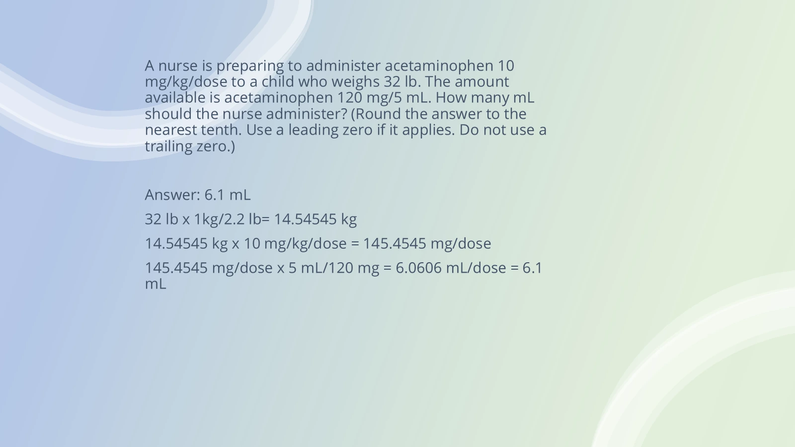
✓ Reveal answer & explanation
Course answer / worked explanation
6.1 mL per dose
- 32 lb ÷ 2.2 = 14.545 kg.
- 14.545 kg × 10 mg/kg = 145.45 mg.
- 145.45 mg × (5 mL ÷ 120 mg) = 6.06 mL → 6.1 mL.
Original selectable text
Exact extraction; text embedded inside pictures remains in the full-size original visual.
A nurse is preparing to administer acetaminophen 10 mg/kg/dose to a child who weighs 32 lb. The amount available is acetaminophen 120 mg/5 mL. How many mL should the nurse administer? (Round the answer to the nearest tenth. Use a leading zero if it applies. Do not use a trailing zero.) Answer: 6.1 mL 32 lb x 1kg/2.2 lb= 14.54545 kg 14.54545 kg x 10 mg/kg/dose = 145.4545 mg/dose 145.4545 mg/dose x 5 mL/120 mg = 6.0606 mL/dose = 6.1 mL
8 / 13 Answer: aThe priority intervention is to administer a bronchodilator to relieve bronchospasm and improve
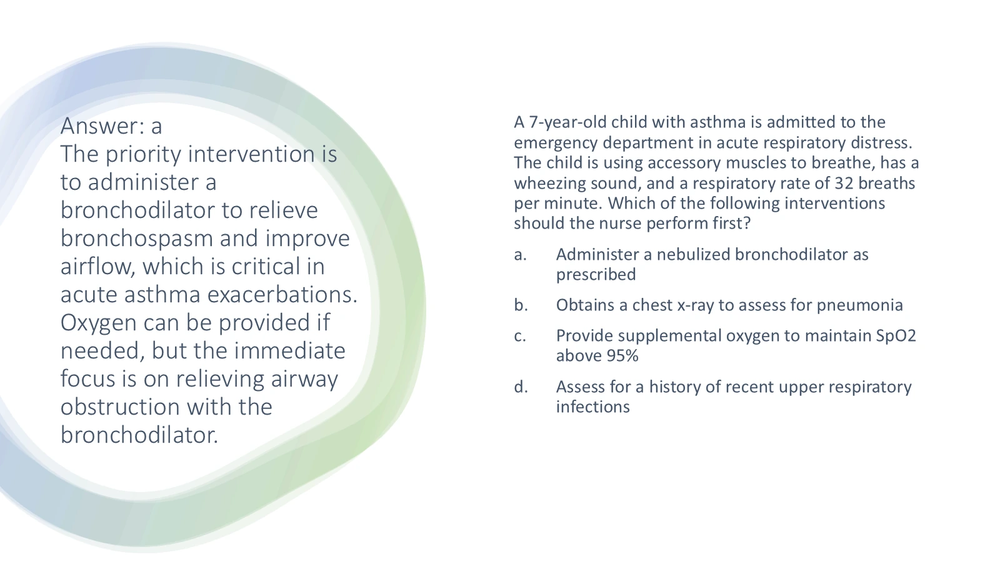
✓ Reveal answer & explanation
Course answer / worked explanation
A — Prescribed nebulized bronchodilator
- A bronchodilator relieves acute bronchospasm. Assess breathing and response.
Original selectable text
Exact extraction; text embedded inside pictures remains in the full-size original visual.
Answer: aThe priority intervention is to administer a bronchodilator to relieve bronchospasm and improve airflow, which is critical in acute asthma exacerbations. Oxygen can be provided if needed, but the immediate focus is on relieving airway obstruction with the bronchodilator. A 7-year-old child with asthma is admitted to the emergency department in acute respiratory distress. The child is using accessory muscles to breathe, has a wheezing sound, and a respiratory rate of 32 breaths per minute. Which of the following interventions should the nurse perform first? Administer a nebulized bronchodilator as prescribed Obtains a chest x-ray to assess for pneumonia Provide supplemental oxygen to maintain SpO2 above 95% Assess for a history of recent upper respiratory infections
9 / 13 Answer: bAsthma exacerbations typically present with sudden worsening of symptoms such as wheezing, cough
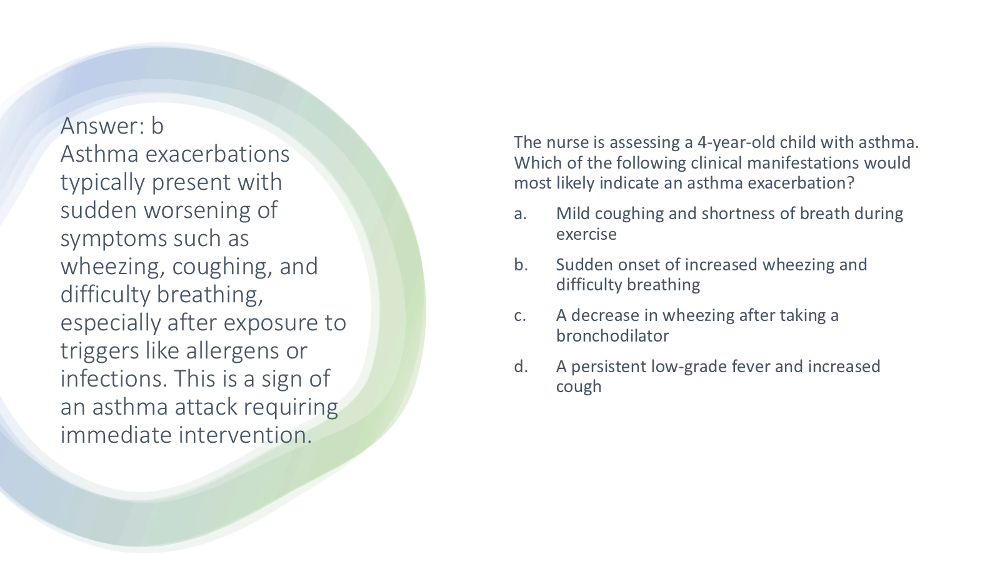
✓ Reveal answer & explanation
Course answer / worked explanation
B — Sudden wheezing and dyspnea
- Recognize acute airflow obstruction and assess promptly.
Original selectable text
Exact extraction; text embedded inside pictures remains in the full-size original visual.
Answer: bAsthma exacerbations typically present with sudden worsening of symptoms such as wheezing, coughing, and difficulty breathing, especially after exposure to triggers like allergens or infections. This is a sign of an asthma attack requiring immediate intervention. The nurse is assessing a 4-year-old child with asthma. Which of the following clinical manifestations would most likely indicate an asthma exacerbation? Mild coughing and shortness of breath during exercise Sudden onset of increased wheezing and difficulty breathing A decrease in wheezing after taking a bronchodilator A persistent low-grade fever and increased cough
10 / 13 A nurse is teaching a child who has asthma how to use a peak flow meter. Which of the following informati
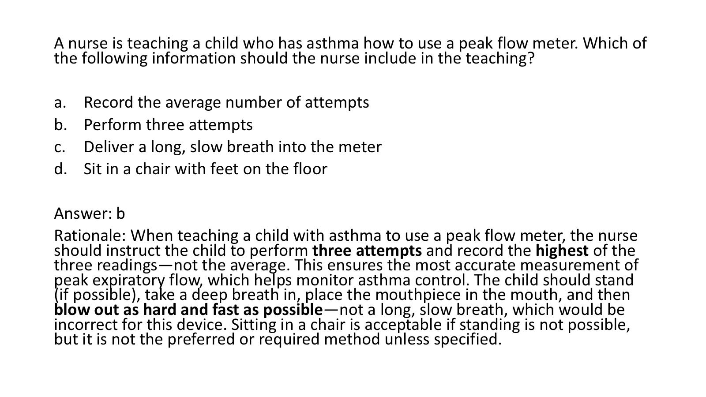
✓ Reveal answer & explanation
Course answer / worked explanation
B — Three attempts; record the highest
- Reset the meter, use correct technique, and compare the best of three readings with the personal-best/action-plan zones.
Original selectable text
Exact extraction; text embedded inside pictures remains in the full-size original visual.
A nurse is teaching a child who has asthma how to use a peak flow meter. Which of the following information should the nurse include in the teaching? Record the average number of attempts Perform three attempts Deliver a long, slow breath into the meter Sit in a chair with feet on the floor Answer: b Rationale: When teaching a child with asthma to use a peak flow meter, the nurse should instruct the child to perform three attempts and record the highest of the three readings—not the average. This ensures the most accurate measurement of peak expiratory flow, which helps monitor asthma control. The child should stand (if possible), take a deep breath in, place the mouthpiece in the mouth, and then blow out as hard and fast as possible—not a long, slow breath, which would be incorrect for this device. Sitting in a chair is acceptable if standing is not possible, but it is not the preferred or required method unless specified.
11 / 13 A nurse is providing discharge teaching for a child who has cystic fibrosis. Which of the following shoul
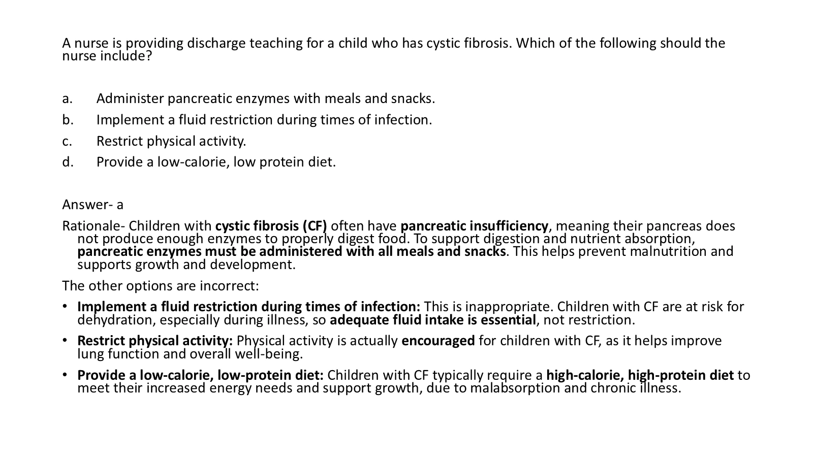
✓ Reveal answer & explanation
Course answer / worked explanation
A — Enzymes with meals and snacks
- Pancreatic enzymes must reach the gut with food to aid digestion in pancreatic insufficiency.
Original selectable text
Exact extraction; text embedded inside pictures remains in the full-size original visual.
A nurse is providing discharge teaching for a child who has cystic fibrosis. Which of the following should the nurse include? Administer pancreatic enzymes with meals and snacks. Implement a fluid restriction during times of infection. Restrict physical activity. Provide a low-calorie, low protein diet. Answer- a Rationale- Children with cystic fibrosis (CF) often have pancreatic insufficiency, meaning their pancreas does not produce enough enzymes to properly digest food. To support digestion and nutrient absorption, pancreatic enzymes must be administered with all meals and snacks. This helps prevent malnutrition and supports growth and development. The other options are incorrect: Implement a fluid restriction during times of infection: This is inappropriate. Children with CF are at risk for dehydration, especially during illness, so adequate fluid intake is essential, not restriction. Restrict physical activity: Physical activity is actually encouraged for children with CF, as it helps improve lung function and overall well-being. Provide a low-calorie, low-protein diet: Children with CF typically require a high-calorie, high-protein diet to meet their increased energy needs and support growth, due to malabsorption and chronic illness.
12 / 13 A nurse in the ED is assessing a newly-admitted infant. Which of the following findings is an early indic
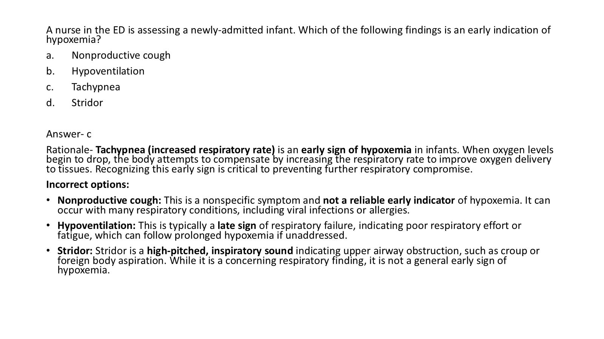
✓ Reveal answer & explanation
Course answer / worked explanation
C — Tachypnea
- An increased respiratory rate can be an early hypoxemia cue; assess the whole child and oxygenation.
Original selectable text
Exact extraction; text embedded inside pictures remains in the full-size original visual.
A nurse in the ED is assessing a newly-admitted infant. Which of the following findings is an early indication of hypoxemia? Nonproductive cough Hypoventilation Tachypnea Stridor Answer- c Rationale- Tachypnea (increased respiratory rate) is an early sign of hypoxemia in infants. When oxygen levels begin to drop, the body attempts to compensate by increasing the respiratory rate to improve oxygen delivery to tissues. Recognizing this early sign is critical to preventing further respiratory compromise. Incorrect options: Nonproductive cough: This is a nonspecific symptom and not a reliable early indicator of hypoxemia. It can occur with many respiratory conditions, including viral infections or allergies. Hypoventilation: This is typically a late sign of respiratory failure, indicating poor respiratory effort or fatigue, which can follow prolonged hypoxemia if unaddressed. Stridor: Stridor is a high-pitched, inspiratory sound indicating upper airway obstruction, such as croup or foreign body aspiration. While it is a concerning respiratory finding, it is not a general early sign of hypoxemia.
13 / 13 An infant weighs 8 pounds and requires IV maintenance fluids. What would the hourly IV rate be for this c
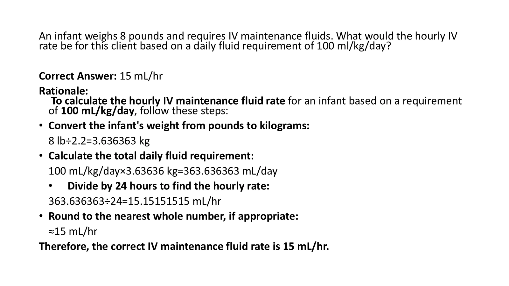
✓ Reveal answer & explanation
Course answer / worked explanation
15 mL/hr (whole-number rounding)
- Use the supplied weight and maintenance-fluid formula. The unrounded course calculation is about 15.15 mL/hr; rounded to a whole number = 15 mL/hr.
Original selectable text
Exact extraction; text embedded inside pictures remains in the full-size original visual.
An infant weighs 8 pounds and requires IV maintenance fluids. What would the hourly IV rate be for this client based on a daily fluid requirement of 100 ml/kg/day? Correct Answer: 15 mL/hr Rationale: To calculate the hourly IV maintenance fluid rate for an infant based on a requirement of 100 mL/kg/day, follow these steps: Convert the infant's weight from pounds to kilograms: 8 lb÷2.2=3.636363 kg Calculate the total daily fluid requirement: 100 mL/kg/day×3.63636 kg=363.636363 mL/day Divide by 24 hours to find the hourly rate: 363.636363÷24=15.15151515 mL/hr Round to the nearest whole number, if appropriate: ≈15 mL/hr Therefore, the correct IV maintenance fluid rate is 15 mL/hr.
Sources for added study explanations
Primary sources checked 10 October 2026. Existing course questions, answer slides, diagrams and notes remain intact.